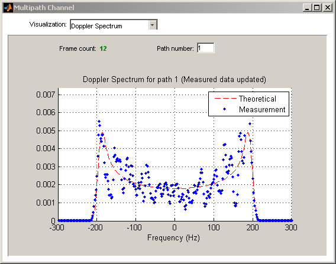
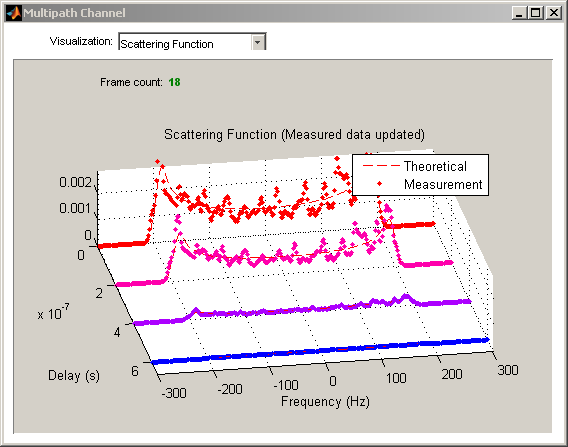
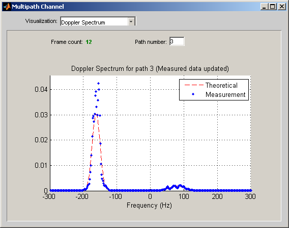
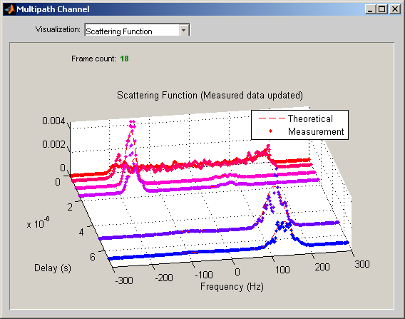
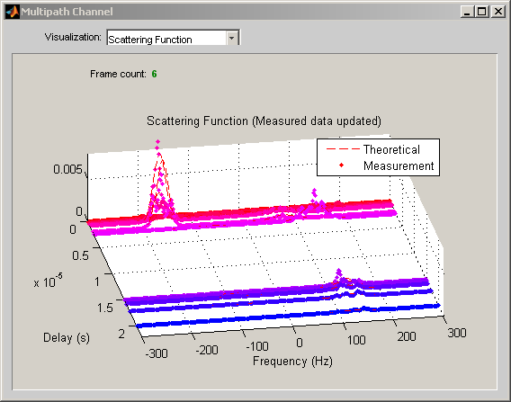
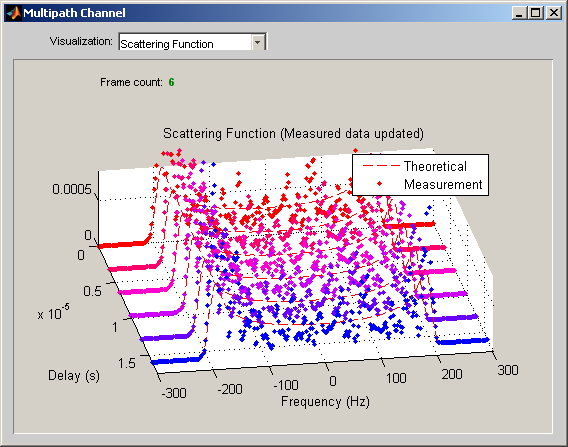

COST 207 and GSM/EDGE Channel Models
This demo shows how to simulate multipath fading channels based on the COST 207 and GSM/EDGE channel models, using the Rayleigh and Rician multipath fading channel objects and the Doppler objects from Communications Toolbox™. It also shows how to visualize these channels using the channel visualization tool.
Contents
- COST 207 Channel Models: Overview
- COST 207 Channel Simulation: Methodology
- Initialization of Simulation-Specific Parameters
- Construction of Doppler Objects
- RAx4 Channel Model: Rural Area with 4 Taps
- BUx6 Channel Model: Bad Urban with 6 Taps
- HTx12 Channel Model: Hilly Terrain with 12 Taps
- GSM/EDGE Channel Models
COST 207 Channel Models: Overview
The COST 207 channel models [1] for mobile radio were standardized to enable different communications designers to simulate their systems using a common set of channel models. Four propagation models are defined: rural area (RA), typical urban area (TU), bad urban area (BU), and hilly terrain (HT). The RA case comprises two distinct channel models, while the other cases each comprise four channel models, for a total of 14 channel models.
Each channel model has several taps. Each tap is characterized by a relative delay (with respect to the first path delay), a relative power, and a Doppler spectrum category. The possible Doppler categories are CLASS, RICE, GAUS1, and GAUS2. The CLASS Doppler category refers to the "classical" spectrum, which is also often termed the Jakes spectrum. The RICE Doppler spectrum is equivalent to the CLASS Doppler spectrum, but with an impulse at the frequency corresponding to the Doppler shift of the line-of-sight component. The GAUS1 and GAUS2 Doppler categories are special cases of the bi-Gaussian spectrum, i.e. the sum of two Gaussian functions in frequency.
COST 207 Channel Simulation: Methodology
We review the methodology to simulate a given COST 207 channel model. At first, Doppler spectrum objects relevant to the given COST 207 model are constructed. Then, a Rayleigh or Rician multipath fading channel object is constructed, and its properties initialized to produce the desired channel model. Data is then processed by the channel object, in order to visualize some properties of the channel using the channel visualization tool.
Initialization of Simulation-Specific Parameters
The simulation sampling rate and the maximum Doppler shift are specified, and kept the same for the remainder of the demo. The input to the channel simulator is oversampled by a factor of four.
M = 8; % Modulation order hModem = modem.pskmod(M); % 8-PSK modulator object Rsym = 9600; % Input symbol rate Rbit = Rsym * log2(M); % Input bit rate Nos = 4; % Oversampling factor ts = (1/Rbit) / Nos; % Input sample period v = 120 * 1e3/3600; % Mobile speed (m/s) fc = 1800e6; % Carrier frequency c = 3e8; % Speed of light in free space fd = v*fc/c; % Maximum Doppler shift of diffuse component
Construction of Doppler Objects
We construct Doppler objects that will be used by the channel objects to produce the desired Doppler spectrum category. These Doppler objects are part of the Doppler package of Communications Toolbox. Type help doppler for information about the Doppler package, and help doppler/types to get the list of supported Doppler spectrum types.
The command below constructs a Doppler object of type Jakes, which is used to emulate the CLASS Doppler category.
dopjakes = doppler.jakes
dopjakes =
SpectrumType: 'Jakes'
The following lines instantiate and initialize a bi-Gaussian Doppler object with parameters corresponding to that of the GAUS1 Doppler category.
dopgauss1 = doppler.bigaussian; dopgauss1.CenterFreqGaussian1 = -0.8; dopgauss1.CenterFreqGaussian2 = 0.4; dopgauss1.SigmaGaussian1 = 0.05; dopgauss1.SigmaGaussian2 = 0.1; dopgauss1.GainGaussian1 = sqrt(2*pi*(dopgauss1.SigmaGaussian1)^2); dopgauss1.GainGaussian2 = 1/10 * sqrt(2*pi*(dopgauss1.SigmaGaussian2)^2)
dopgauss1 =
SpectrumType: 'BiGaussian'
SigmaGaussian1: 0.0500
SigmaGaussian2: 0.1000
CenterFreqGaussian1: -0.8000
CenterFreqGaussian2: 0.4000
GainGaussian1: 0.1253
GainGaussian2: 0.0251
Similarly, a bi-Gaussian Doppler object with parameters corresponding to that of the GAUS2 model is constructed below.
dopgauss2 = doppler.bigaussian; dopgauss2.CenterFreqGaussian1 = 0.7; dopgauss2.CenterFreqGaussian2 = -0.4; dopgauss2.SigmaGaussian1 = 0.1; dopgauss2.SigmaGaussian2 = 0.15; dopgauss2.GainGaussian1 = sqrt(2*pi*(dopgauss1.SigmaGaussian1)^2); dopgauss2.GainGaussian2 = 1/10^1.5 * sqrt(2*pi*(dopgauss1.SigmaGaussian2)^2)
dopgauss2 =
SpectrumType: 'BiGaussian'
SigmaGaussian1: 0.1000
SigmaGaussian2: 0.1500
CenterFreqGaussian1: 0.7000
CenterFreqGaussian2: -0.4000
GainGaussian1: 0.1253
GainGaussian2: 0.0079
RAx4 Channel Model: Rural Area with 4 Taps
The rural area (RA) models are characterized by Rician fading on the first path, and Rayleigh fading on the remaining paths. The first path has a RICE Doppler spectrum, while the remaining paths have a CLASS Doppler spectrum. The line-of-sight component of the first path has a Doppler shift of 0.7 times the maximum Doppler shift of the diffuse component.
The code below constructs a Rician channel object according to the RA model with 4 taps. By default, a Rician channel object has a RICE (Jakes + impulse) spectrum on the first path, and a CLASS (Jakes) spectrum on subsequent paths.
kFactor = 0.87/0.13; % Note: we use the value from 3GPP TS 45.005 V7.9.0
fdLOS = 0.7 * fd;
RAx4PathDelays = [0.0 0.2 0.4 0.6] * 1e-6;
RAx4AvgPathGaindB = [0 -2 -10 -20];
chan = ricianchan(ts, fd, kFactor, RAx4PathDelays, RAx4AvgPathGaindB, fdLOS)
chan =
ChannelType: 'Rician'
InputSamplePeriod: 8.6806e-006
DopplerSpectrum: [1x1 doppler.jakes]
MaxDopplerShift: 200.0000
PathDelays: [0 2.0000e-007 4.0000e-007 6.0000e-007]
AvgPathGaindB: [0 -2 -10 -20]
KFactor: 6.6923
DirectPathDopplerShift: 140
DirectPathInitPhase: 0
NormalizePathGains: 1
StoreHistory: 0
StorePathGains: 0
PathGains: [1x4 double]
ChannelFilterDelay: 4
ResetBeforeFiltering: 1
NumSamplesProcessed: 0
The code below simulates the RAx4 channel and visualizes the Doppler spectrum of the first path using the channel visualization tool.
% This setting is needed to store quantities used by the channel % visualization tool. chan.StoreHistory = 1; % After each frame is processed, the channel is not reset: this is necessary % to preserve continuity across frames. chan.ResetBeforeFiltering = 0; % This setting makes the total average power of all path gains be equal to 1. chan.NormalizePathGains = 1; Nframes = 12; Nsamples = 1e4; for iFrames = 1:Nframes y = filter(chan, modulate(hModem, randi([0 M-1],Nsamples,1))); plot(chan); % Select the Doppler spectrum as the current visualization. if iFrames == 1, channel_vis(chan, 'visualization', 'doppler'); end; end
We then visualize the scattering function.
channel_vis(chan, 'visualization', 'scattering'); Nframes = 6; for iFrames = 1:Nframes y = filter(chan, modulate(hModem, randi([0 M-1],Nsamples,1))); plot(chan); end
BUx6 Channel Model: Bad Urban with 6 Taps
The bad urban (BU) models are characterized by Rayleigh fading on all paths. In the case of the BU channels with 6 taps, the first two paths have a CLASS (Jakes) Doppler spectrum, the next two paths have a GAUS1 Doppler spectrum, and the remaining two paths a GAUS2 Doppler spectrum.
The code below constructs a Rayleigh channel object according to the BU model with 6 taps. It uses the Doppler objects created earlier to specify the DopplerSpectrum property of the constructed channel object.
channel_vis(chan, 'close'); chan = rayleighchan(ts, fd); % Assign profile-specific properties to channel object. chan.PathDelays = [0.0 0.4 1.0 1.6 5.0 6.6] * 1e-6; chan.AvgPathGaindB = [-3 0 -3 -5 -2 -4]; chan.DopplerSpectrum = [dopjakes dopjakes dopgauss1 dopgauss1 dopgauss2 dopgauss2]
chan =
ChannelType: 'Rayleigh'
InputSamplePeriod: 8.6806e-006
DopplerSpectrum: [6x1 doppler.baseclass]
MaxDopplerShift: 200.0000
PathDelays: [1x6 double]
AvgPathGaindB: [-3 0 -3 -5 -2 -4]
NormalizePathGains: 1
StoreHistory: 0
StorePathGains: 0
PathGains: [1x6 double]
ChannelFilterDelay: 4
ResetBeforeFiltering: 1
NumSamplesProcessed: 0
The code below simulates the BUx6 channel and visualizes the Doppler spectrum of the third path using the channel visualization tool.
chan.StoreHistory = 1; chan.ResetBeforeFiltering = 0; chan.NormalizePathGains = 1; Nframes = 12; for iFrames = 1:Nframes y = filter(chan, modulate(hModem, randi([0 M-1],Nsamples,1))); plot(chan); % Select the Doppler spectrum of the third path as the current visualization. if iFrames == 1, channel_vis(chan, 'visualization', 'doppler', 3); end; end
We then visualize the scattering function.
channel_vis(chan, 'visualization', 'scattering'); Nframes = 6; for iFrames = 1:Nframes y = filter(chan, modulate(hModem, randi([0 M-1],Nsamples,1))); plot(chan); end
HTx12 Channel Model: Hilly Terrain with 12 Taps
The hilly terrain (HT) models are also characterized by Rayleigh fading on all paths. The HT channels with 12 taps have a mixture of CLASS, GAUS1, and GAUS2 taps.
We use the function stdchan to construct a channel object according to the HT model with 12 taps. For a list of standardized channel models supported by stdchan, type help stdchan.
channel_vis(chan, 'close'); chan = stdchan(ts, fd, 'cost207HTx12')
chan =
ChannelType: 'Rayleigh'
InputSamplePeriod: 8.6806e-006
DopplerSpectrum: [12x1 doppler.baseclass]
MaxDopplerShift: 200.0000
PathDelays: [1x12 double]
AvgPathGaindB: [-10 -8 -6 -4 0 0 -4 -8 -9 -10 -12 -14]
NormalizePathGains: 1
StoreHistory: 0
StorePathGains: 0
PathGains: [1x12 double]
ChannelFilterDelay: 4
ResetBeforeFiltering: 1
NumSamplesProcessed: 0
We bring up the channel visualization tool and visualize the scattering function.
chan.StoreHistory = 1; chan.ResetBeforeFiltering = 0; chan.NormalizePathGains = 1; Nframes = 6; for iFrames = 1:Nframes y = filter(chan, modulate(hModem, randi([0 M-1],Nsamples,1))); plot(chan); if iFrames == 1, channel_vis(chan, 'visualization', 'scattering'); end; end
GSM/EDGE Channel Models
The stdchan function also provides support for GSM/EDGE channel models [2], [3], among other standardized models. Several GSM/EDGE channel models are based on the COST 207 channel models, but with the assumption that each Rayleigh-fading tap has a Jakes Doppler spectrum.
Below we construct a channel object according to the Profile for equalization test, i.e. EQx [2], [3], and visualize its scattering function.
channel_vis(chan, 'close'); chan = stdchan(ts, fd, 'gsmEQx6'); chan.StoreHistory = 1; chan.ResetBeforeFiltering = 0; chan.NormalizePathGains = 1; Nframes = 6; for iFrames = 1:Nframes y = filter(chan, modulate(hModem, randi([0 M-1],Nsamples,1))); plot(chan); if iFrames == 1, channel_vis(chan, 'visualization', 'scattering'); end; end
References:
[1] COST 207, "Digital land mobile radio communications," Office
for Official Publications of the European Communities, Final report,
Luxembourg, 1989.
[2] 3GPP TS 05.05 V8.20.0 (2005-11): 3rd Generation Partnership
Project; Technical Specification Group GSM/EDGE Radio Access(TM)
Network; Radio transmission and reception (Release 1999).
[3] 3GPP TS 45.005 V7.9.0 (2007-2): 3rd Generation Partnership
Project; Technical Specification Group GSM/EDGE Radio Access
Network; Radio transmission and reception (Release 7).